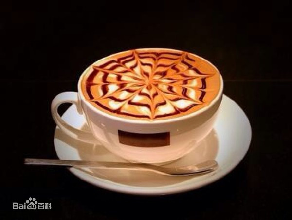
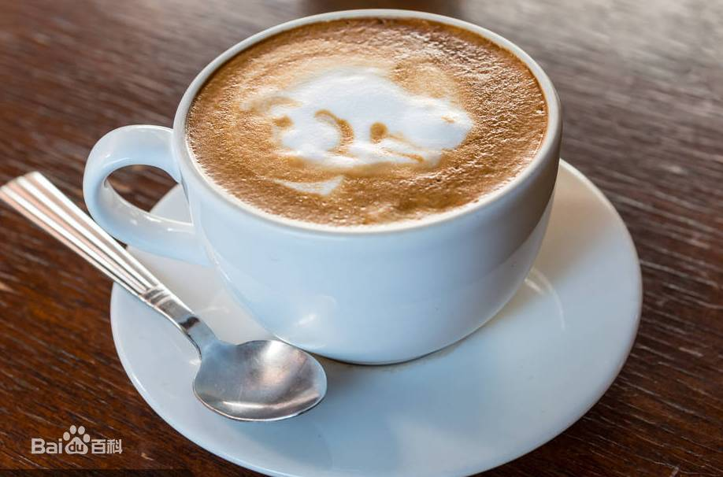
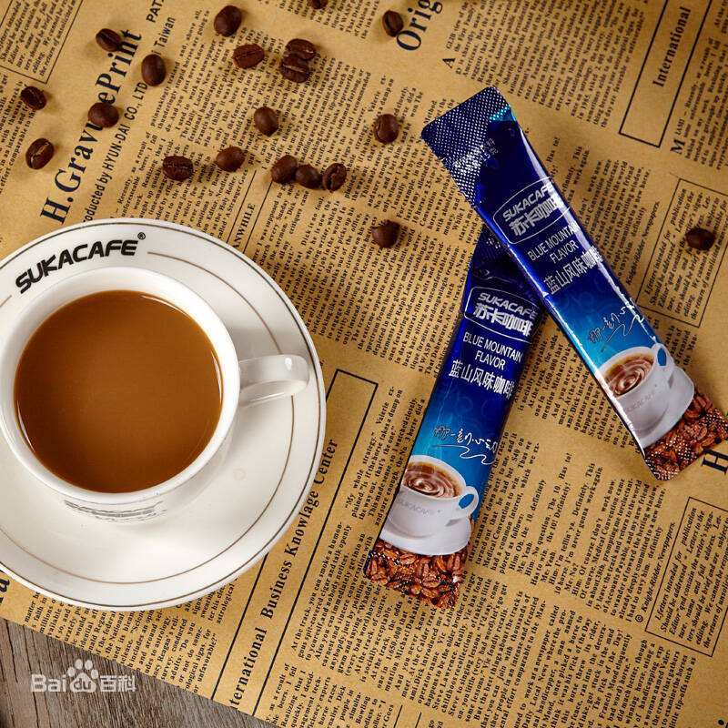
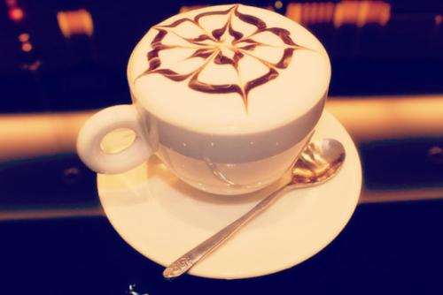

转角遇见
| 咖啡 | 价格 |
|---|---|
| 美式 | 23 |
| 摩卡 | 28 |
| 拿铁 | 26 |
| 速溶 | 15 |
| 玛奇朵 | 30 |
| 卡布奇诺 | 24 |
美式咖啡
美式咖啡就是很淡很淡的咖啡，法国人把美式咖啡戏称为jus de chaussette就是洗袜子的水。在欧洲（法国和意大利），点美式咖啡可能会被人嘲笑。 其中美国人饮用咖啡的方式有几点让欧洲人不以为然：
摩卡
摩卡咖啡恐怕是最受女孩子欢迎的咖啡品种，这缘于它浓厚的巧克力味和牛奶味，绝大多数对咖啡有略微了解的人会认为它只是在拿铁中添加了巧克力。这种说法不算错，但不完全正确。
地道的摩卡怕是不太容易被女孩子很快爱上的，它除了具有天然的巧克力余味外，辛辣、刺激、带有浓郁的酒香是它不太温柔的一面。
拿铁
“拿铁”不是咖啡
其实，拿铁在意大利语里是“牛奶”的意思，如果你点一杯“拿铁”，那么服务生只会给你上一杯牛奶。而意大利语的Caffè Latte指的才是拿铁。现在很多冷饮店都会推出自己的“拿铁”系列，像“红茶拿铁”“抹茶拿铁”等等，其实就是奶茶而并没有咖啡的成分。
拿铁咖啡是意大利浓缩咖啡(Espresso)与牛奶的经典混合，意大利人也很喜欢把拿铁作为早餐的饮料。喝拿铁的意大利人，与其说他们喜欢意大利浓缩咖啡，不如说他们喜欢牛奶，也只有Espresso才能给普普通通的牛奶带来让人难以忘怀的味道。
速溶咖啡
速溶咖啡，是通过将咖啡萃取液中的水分蒸发而获得的干燥的咖啡提取物。速溶咖啡能够很快的溶化在热水中，而且在储运过程中占用的空间和体积更小，更耐储存。
玛奇朵
玛奇朵Macchiato在意大利文里是“印记、烙印”的意思，奶霜漂浮在红茶上面，人们喝的时候，红茶会在入口前先经过奶霜，而奶霜就像瞬间烙印在茶汤上，所以叫玛奇朵。
玛奇朵咖啡是奶咖啡的一种，它是先将牛奶和香草糖浆混合后再加入奶沫，然后再倒入咖啡，最后在奶沫上淋上网格状焦糖。Caramel Macchiato，是玛奇朵咖啡的名字。它的名字焦糖玛奇朵就象征着甜蜜的印记。
卡布奇诺
卡布奇诺咖啡是意大利咖啡的一种变化，即在偏浓的咖啡上，倒入以蒸汽发泡的牛奶，此时咖啡的颜色就像卡布奇诺教会修士深褐色外衣上覆的头巾一样，咖啡因此得名。
在这个充满爱意和浪漫的年代，当然，卡布奇诺也自然而然的被年轻人运用到了爱情上面。卡布奇诺的密语是暗恋，期待爱情。卡布奇诺有着甜中带苦，却又始终如一的味道。预示着，等待就是甜中带苦:怀着忠实的真心，不变心地等待爱情。